Жильё
-
Andrew Loft Guest House
проспект Независимости, 43
Гостевой дом "Andrew Loft" предоставляет своим гостям размещение в Минске. К услугам проживающих: прокат велосипедов, скоростной интернет, лифт, трансфер, запирающиеся шкафчики.
Просторные номера выполнены в современном стиле. В цветовой гамме преобладают яркие оттенки. В числе удобств: телевизор с плоским экраном, письменный стол со стульями, общая ванная комната, средства личной гигиены, тапочки.
-
HOSTEL FLATKOM
Улица Притыцкого, д. 2 корп. 1
Хостел "Flatcom" предоставляет своим гостям размещение в Минске. К услугам проживающих: парковка, скоростной интернет, прокат велосипедов, трансфер, круглосуточная стойка регистрации, камера хранения, прачечная.
Просторные комнаты, выполненные в светлой цветовой гамме, оснащены всеми удобствами для проживания с комфортом. В распоряжении постояльцев будут: запирающиеся шкафчики, письменный стол со стульями, диван, телевизор с плоским экраном.
-
Гостиничный комплекс “У фонтана”
Улица Амураторская, 4
Отель «У фонтана» находится Минске, Республика Беларусь, в 2,6 км от центра города и в 700 м от станции метро «Молодёжная». На территории отеля есть баня, сауна, спа, бассейн. Для гостей доступна сеть Wi-Fi, автостоянка, пользование факсом и принтером.
Номера оснащены спальным местом, своей ванной комнатой, будильником, телевизором с плоским экраном, шкаф для хранения вещей и кабельное телевидение. Ежедневная уборка номеров. По запросу предоставляют детскую кроватку, утюг и гладильную доску.
-
robinson CITY
Улица Зыбицкая, 4
Отель «Робинсон-сити» удачно расположился в центре Минска, вблизи посещаемых туристических мест и объектов инфраструктуры. Номерной фонд приставлен двухместными категориями с уютным интерьером и комфортабельной мягкой мебелью. Они оснащены высокоскоростным Wi-fi, ЖК-телевизором, собственной ванной комнатой и затемнёнными шторами для хорошего сна.
Ресторан на территории отеля предлагает вкусные и сытные блюда европейской и белорусской кухни. У гостей есть возможность организовать торжественное мероприятие в банкетном зале.
Достопримечательности
-
Ворота Минска
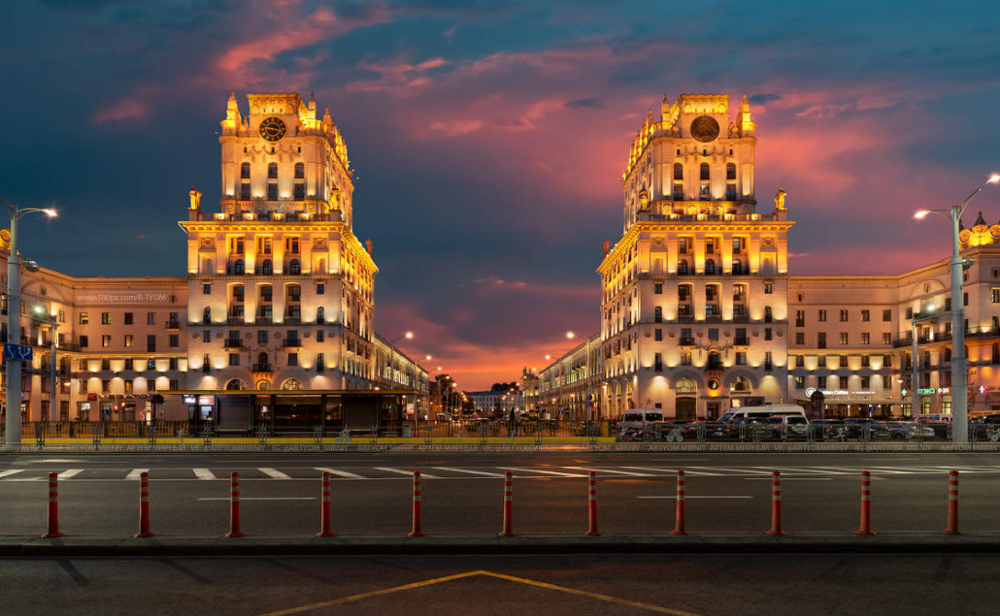Местоположение: Улица Кирова
Это одна из визитных карточек города, два величественных здания в стиле сталинского ампира на Привокзальной площади. На них можно увидеть множество скульптур (часть из них была реконструирована в начале 2000-х), а также герб БССР и немецкие часы, циферблат которых достигает 3,5 метров в диаметре. Это самые большие часы в Беларуси, в стране они появились в качестве трофея во время Второй мировой войны. Популярность башен и то, как гармонично они вписались в окружающую обстановку, — несомненно, заслуга архитектора, который смог объединить в них и черты эпохи, во время которой были построены, и отсылку к далекому прошлому города, когда на въезде в замчище несколько веков назад были установлены массивные ворота.
-
Троицкое предместье
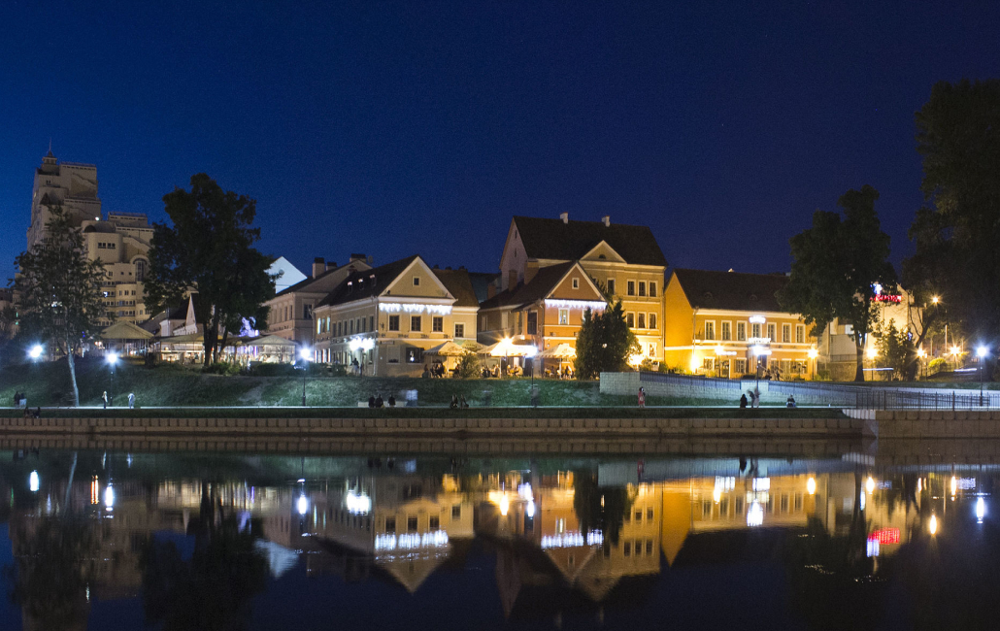Местоположение: северо-восточная части исторического центра на левом берегу реки Свислочь.
Часть «Старого города», частично сохранившаяся до наших пор. Первые поселения здесь появились еще в XVI веке. Славяне строили деревянные хижины и занимались сельскими ремеслами. Новый старт этой местности подарил император Александр I. По его указу здесь началось масштабное строительство роскошных усадеб, парков и площадей.
Именно Александр дал Троицкому предместью его название. Земли скупали богатые помещики, на улицах купцы открывали лавки заморских товаров. Жизнь текла мирно и размерено, пока XX век не нарушил этот покой.
Революция и Вторая мировая война стали причиной утраты многих исторических построек. Долгое время Троицкое предместье лежало в руинах. Восстановление продвигалось тихими темпами и длилось много лет. Современные ученые не признают местность историческим центром, так как большинство построек — лишь копии старинных зданий.
-
Национальный художественный музей
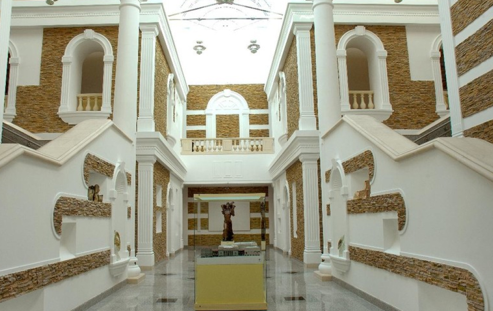Местоположение: Улица Ленина, 20
Национальный художественный музей был открыт в 1939 году. Его обширная коллекция расположилась в великолепном каменном здании в стиле классицизм. Его легко узнать по античным колоннам и скульптурам, размещенным в нишах по обе стороны от парадного входа и на крыше.
Картинные галереи разделяются на несколько тематических залов, посвященных отдельным художникам, сюжетам, древней истории разных стран и мифологии. Каждый зал оформлен в индивидуальном стиле, отражающем характер произведений и создающем соответствующую атмосферу. Здесь можно увидеть полотна великих русских живописцев, известных на весь мир. Среди них Иван Айвазовский, Илья Репин, Эдуард Хруцкий и Исаак Левитан.
В фонде этого места насчитывается более 27 тысяч единиц ценных экспонатов, что делает его крупнейшим художественным центром всей Белоруссии.
-
Большой театр оперы и балета
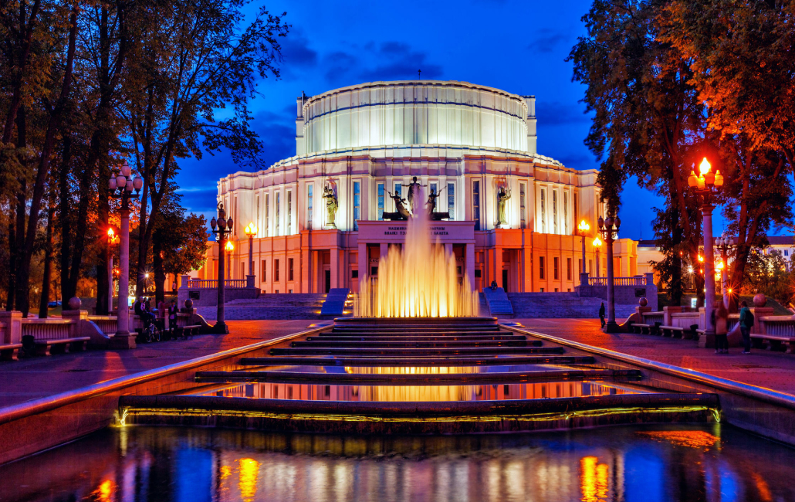Местоположение: площадь Парижской Коммуны, 1
Единственный в стране Большой театр расположен в помпезном здании работы выдающегося белорусского архитектора Иосифа Лангбарда. Вдохновленный художник вложил в проект всю душу и талант и создал истинный шедевр архитектуры.
Белоснежное строение в стиле постконструктивизма выделяется нестандартной формой и изысканными украшениями в виде бронзовых статуй древнегреческих богов, покровительствующих искусству. Неземной красоты театр находится в соответствующем его облику месте – на просторной площади Парижской Коммуны. Прямо перед зданием в воздух поднимаются струи большого фонтана, переходящего в декоративный водоем.
Театр сильно пострадал в годы Великой Отечественной войны. Первая же бомбардировка нанесла ему значительные увечья, а фашистские захватчики разграбили оставшиеся интерьеры и устроили в помещениях конюшенный двор. Горькое время не отразилось на современном виде театра. После реставрации он стал выглядеть как новый. В 2009 году были обновлены фасадные скульптуры.
Сегодня в репертуар театра входит более 80 оперных и балетных постановок. Среди них есть классически и современные произведения, способные впечатлить как детей, так и взрослых. Культурная программа включает не только представления, но и экскурсию, в ходе которой посетителям расскажут историю заведения.
-
Музей валунов
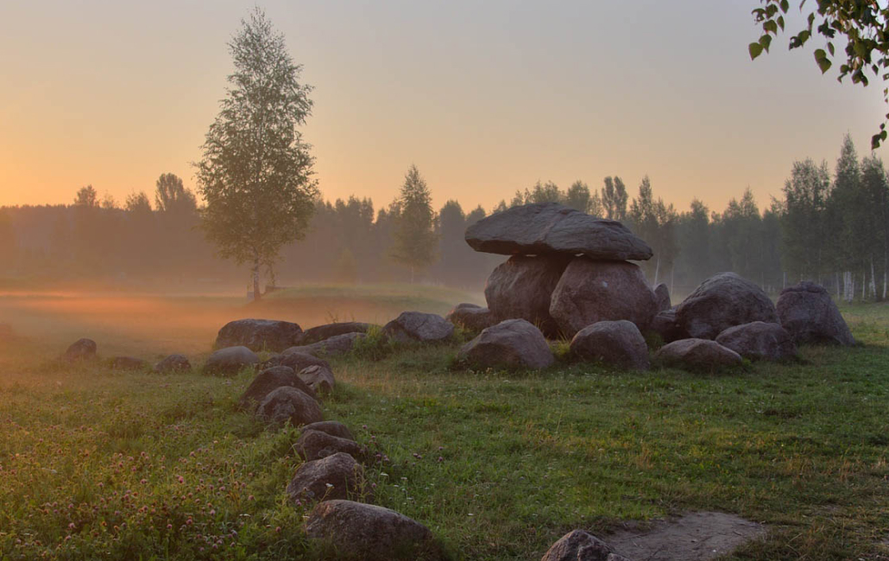Местоположение: между Академгородком и микрорайоном Уручье-2 в пойме бывшей реки
Речь про парковый музей, созданный в 1985 году академиком-энтузиастом Гаврилой Горецким. Учреждение представляет собой отображение карты страны посредством огромных камней и живых деревьев. Карта представлена в масштабе: 1 м в ширину - 2 км, а 1 м в высоту - 100 м. Границы белорусского государства отмечены невысокими ровно подстриженными кустарниками.
Области обозначены голубыми елями, каменистые тропинки изображают реки, а маленькие фонтаны — озера. Большие валуны, разбросанные по карте — это города и горы. Стоит отметить, что камни, обозначающие ту или иную местность, были действительно привезены оттуда.
Наиболее значимыми экспонатами музея является «Крест Стефана Батория» (существует предание, будто король обедал у его подножия), валун «Дед» — камень с резным изображением лица, взятый с места языческого святилища, и древний жернов, в котором мололи зерна. С конца 1980-х гг. Музей валунов считается памятником природы республиканского значения.
-
Мемориальный музей-мастерская Заира Азгура
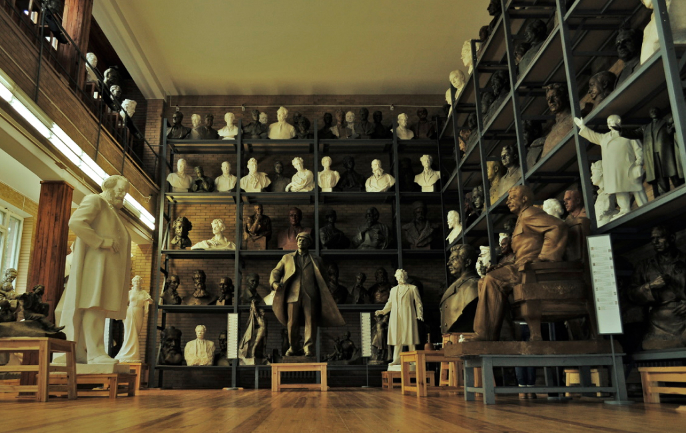Местоположение: улица Азгура, 8
Мемориальный музей-мастерская З.И. Азгура – единственный мемориальный, монографический музей Минска. Основан в 1984 г. С 1999 г. занесен в список историко-культурных ценностей Беларуси. Фонд его состоит из 4009 экспонатов.
Музей-мастерская – центр художественных инициатив, место творческой лаборатории, где воплощают свои самые смелые идеи художники, скульпторы, архитекторы.
-
Национальная библиотека Беларуси
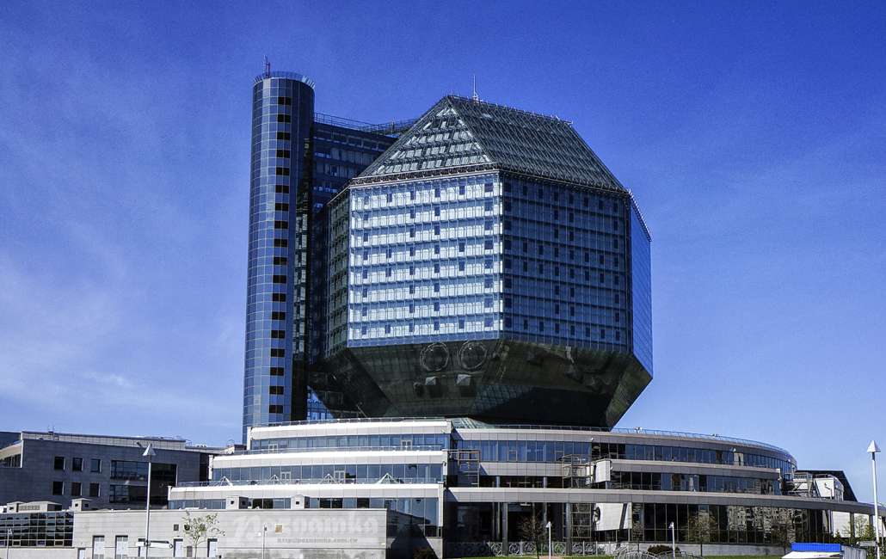Местоположение: проспект Независимости, 116
Здание библиотеки — одно из наиболее узнаваемых и запоминающихся в Минске. Оно выполнено в форме ромбокубооктаэдра — многогранника, состоящего из кубов и треугольников. Общее число граней в нем достигает 26-ти.
Остекленная постройка ассоциируется с кристаллом. Это определение особенно подходит библиотеке в темное время суток, когда фасад озаряется призрачно-голубым светом. Автор проекта неспроста выбрал для здания библиотеки форму кристалла. Так он хотел отобразить драгоценность и прочность знаний.
В библиотеке 23 этажа, на которых располагаются читальные залы, зоны отдыха, лекционные аудитории, картинные галереи, музей библиотеки, а также фитнесс-центр с сауной. На верхних этажах находятся смотровые площадки, доступные для посетителей.
-
Минская ратуша
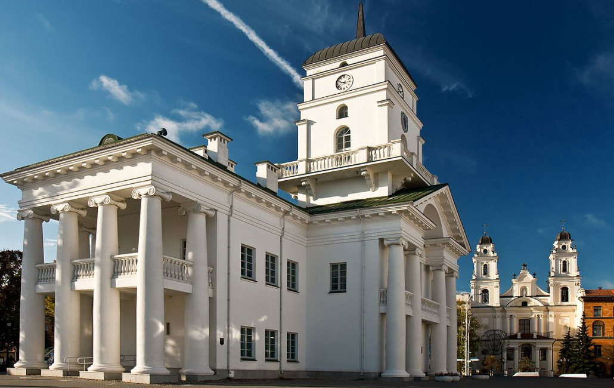Местоположение: площадь Свободы, 2а
Городская ратуша — символ свободы. Она была построена в XVII веке, когда правитель Великого Княжества Литовского Александр подарил горожанам Магдебургское право, которое позволяло минчанам учредить магистрат (орган самоуправления) и разместить его в ратуше.
Нововозведенное здание представляло собой белокаменную постройку в псевдоготическом стиле. Его украшали массивные колонны, веранды с балясинами и башенная настройка под шпилем, в центре которой размещались часы.
Когда Беларусь присоединилась к России, Магдебургское право было упразднено, а в ратуше в разное время эксплуатировалась как суд, театр, музыкальная школа и архив. В 1850-х по указу Николая I здание снесли по причине ветхости. Однако другие источники утверждают, что император не хотел, чтобы что-либо напоминало минчанам об их былой свободе.
Восстановление ратуши произошло в 2003 году. Новое здание полностью повторяет облик своего старинного предшественника. Сейчас в нем открыты выставки, посвященные истории Магдебургского права, а также организуются совещания и официальные приемы.
-
Раковское предместье
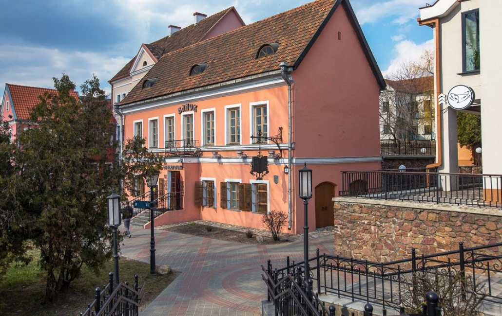Местоположение: улица Раковская
Раковское предместье – один из старейших районов Минска. Предположительно возник в 11 в. возле Раковской дороги. Есть свидетельства, что в предместье была униатская церковь, кармелитские монастырь и костел, Петропавловская церковь и монастырь.
Во время ВОВ значительная часть Раковского предместья была центром еврейского гетто. В нем содержалось более 100 тыс. узников и около 35 тыс. евреев. На момент освобождения гетто вы живых осталось несколько десятков человек.
-
Костел Святого Симеона и Святой Елены
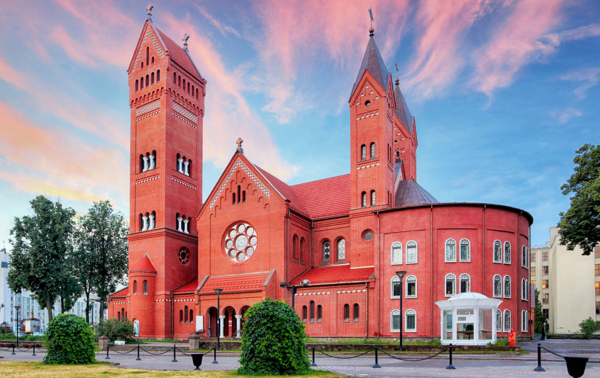Местоположение: улица Советская, 15
Католический храм был построен в начале XX века. Это краснокирпичное здание с высокими башнями и витражными окнами в народе прозвали «Красным костелом». Огромный вклад в возведение католической достопримечательности внес минский дворянин и политик Эдвард Войнилович, пожертвовавший на строительство крупную сумму.
Единственное одолжение, о котором просил благодетель — это назвать будущий храм в честь его покойных детей. Их у Эдварда было двое: сын Семен, умерший от скарлатины на 13 году жизни, и 19-летняя дочь Елена, которую погубила пневмония. Просьба скорбящего отца была исполнена — костел освятили в честь Симеона и Елены.
Храм принимал прихожан недолго. Революция и последующие гонения за веру привели к закрытию большего числа культовых учреждений. При СССР в помещениях костела размещались театры, музеи, кинотеатры. Здание вернули католикам в 1990-х, и после ремонта он возобновил богослужебную деятельность. С 2017 г. разбитый рядом с костелом сквер носит имя Эдварда Войниловича.
-
Всехсвятская церковь
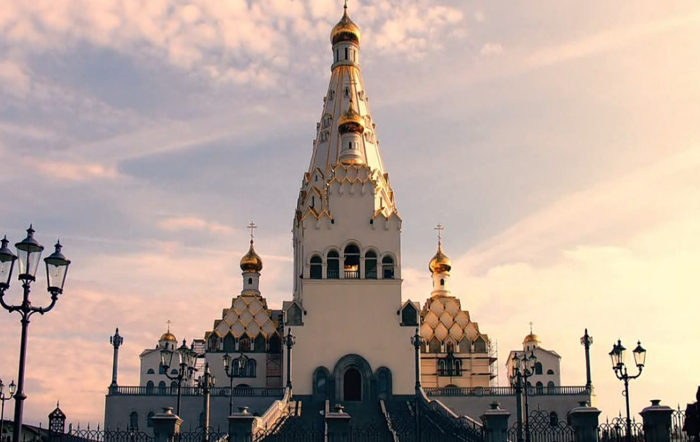Местоположение: улица Калиновского, 121
Всехсвятская церковь – настоящая гордость города Минска! «Храм-памятник в честь Всех Святых и в память безвинно убиенных во Отечестве нашем», является самым высоким храмом в Содружестве Независимых Государств – 74 метра, поражая своим величием каждого местного жителя и путешественника, верующего и неверующего. Архитектурная задумка была такова: построить необыкновенный храм в форме шатра, увенчанного крестом. Шатер – это символ Божией матери, в основе которого лежит число 9. Храм имеет 5 золотых куполов, каждый купол установлен в честь всех Святых Белоруссии, в память о невинных душах, убиенных в тюрьмах, в честь ушедших детей и всех солдат, отдавших свою жизнь за Родину.
Кафе
- 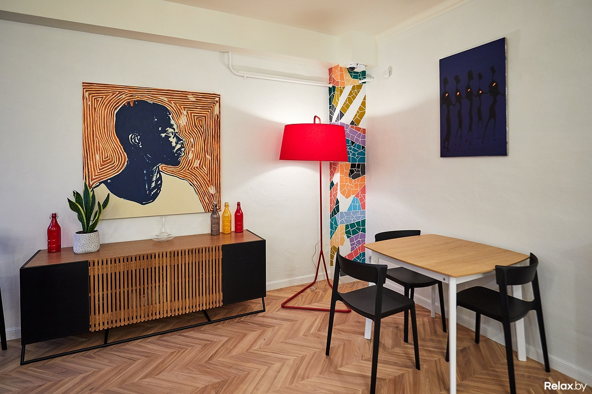
-
Moby Dick cafe
После посещения этого кафе можно насладиться прогулкой с видом на Площадь Победы. Возьмите вкусные сэндвичи, кашу и жареный сыр. В Moby Dick Caffe обязательно попробуйте хорошие круассаны, чизкейк и брауни. Обязательно посетите это место, если вы хотите попробовать неплохой эспрессо, маття или капучино.
Здесь можно вкусно перекусить на открытом воздухе. Множество клиентов указывают на то, что персонал в этом заведении терпеливый. Гости отрицательно отзываются о сервисе этого кафе. Цены здесь умеренные. По отзывам посетителей, в Moby Dick Caffe замечательный интерьер и уютная атмосфера.
Улица Октябрьская, 16
-
Чырвоны дворык
Красный дворик Минска — необычное место, в котором витает дух 19 столетия. Небольшой уголок, затерянный в белорусской столице, найти не так просто. К нему ведут только одни решетчатые ворота черного цвета. Мощная конструкция на первый взгляд ничем не примечательна. Но, если вы прогуливаетесь вдоль улицы, обязательно загляните в эти ворота, чтобы, словно по мановению волшебной палочки, перенестись на 100 лет назад.
Необычный красный цвет строений привлекает взгляды. Здесь получаются очень красивые и оригинальные фотографии. Туристы могут приобрести здесь изготовленную вручную бижутерию, попасть на выставку местного мастера кисти и пера, организовать классную фотосессию.
Улица Революционная, 7
- 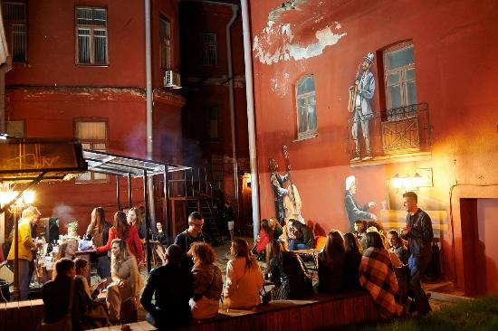
- 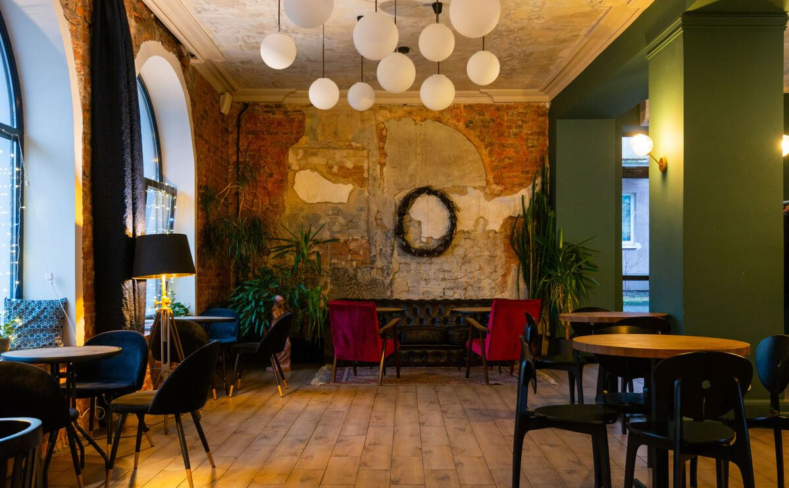
-
MON NOM
Бар-кофейня MON NOM предлагает в полной мере отвлечься от повседневных забот и расслабиться, насладившись уютной атмосферой, хорошим кофе и идеальным завтраком, обедом или ужином, собранным самостоятельно из меню-конструктора.
Кофейня «Мон Ном» в Минске разместилась в трёхэтажном жилом доме на Клумова 11, который трудно упустить из вида из-за знаменитой на весь район лепнины с русалками и Нептуном. Стены открыли до кирпича, который стал неотъемлемой фактурной частью интерьера. Внутри поучилось комфортное и стильное посещение с высокими потолками, старинной мебелью, обилием зелени и видом на заводские пейзажи.
Улица Стахановская, 2
-
ЛЕГЕНДАР
Место в новом формате, соединяющее дневную кофейню «Легендарку» и вечерний коктейльный бар «Легендар». Заведение в формате кофейни «Легендарка» отвечает за кофе и кофейные напитки и работает до 19:00 ежедневно. В дневное время сюда можно зайти за кофейными напитками, а также кофе местной обжарки.
В вечернее и ночное время «Легендар» готовит коктейли, в которых раскроются вкусы и ароматы национальных компонентов.
В баре продаются сувениры, разработанные совместно с белорусскими дизайнерами и мастерами.
Улица Революционная, 14
- 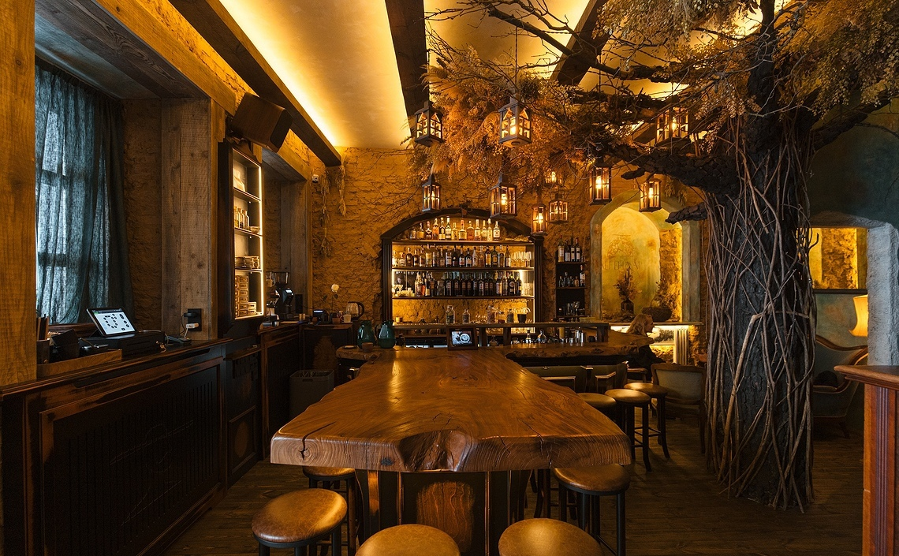